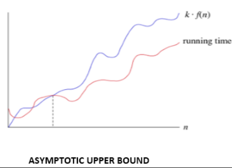
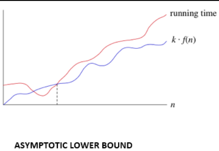
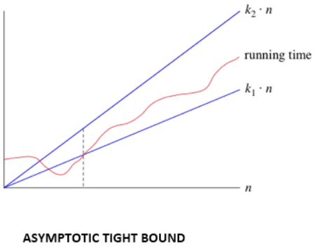

Design Analysis and Algorithm
DAA Algorithm
The word algorithm has been derived from the Persian author's name, Abu Ja 'far Mohammed ibn Musa al Khowarizmi (c. 825 A.D.), who has written a textbook on Mathematics. The word is taken based on providing a special significance in computer science. The algorithm is understood as a method that can be utilized by the computer as when required to provide solutions to a particular problem.
An algorithm can be defined as a finite set of steps, which has to be followed while carrying out a particular problem. It is nothing but a process of executing actions step by step.
An algorithm is a distinct computational procedure that takes input as a set of values and results in the output as a set of values by solving the problem. More precisely, an algorithm is correct, if, for each input instance, it gets the correct output and gets terminated.
An algorithm unravels the computational problems to output the desired result. An algorithm can be described by incorporating a natural language such as English, Computer language, or a hardware language.
Characteristics of Algorithms
Input: It should externally supply zero or more quantities.
Output: It results in at least one quantity.
Definiteness: Each instruction should be clear and ambiguous.
Finiteness: An algorithm should terminate after executing a finite number of steps.
Effectiveness: Every instruction should be fundamental to be carried out, in principle, by a person using only pen and paper.
Feasible: It must be feasible enough to produce each instruction.
Flexibility: It must be flexible enough to carry out desired changes with no efforts.
Efficient: The term efficiency is measured in terms of time and space required by an algorithm to implement. Thus, an algorithm must ensure that it takes little time and less memory space meeting the acceptable limit of development time.
Independent: An algorithm must be language independent, which means that it should mainly focus on the input and the procedure required to derive the output instead of depending upon the language.
Advantages of an Algorithm
Effective Communication: Since it is written in a natural language like English, it becomes easy to understand the step-by-step delineation of a solution to any particular problem.
Easy Debugging: A well-designed algorithm facilitates easy debugging to detect the logical errors that occurred inside the program.
Easy and Efficient Coding: An algorithm is nothing but a blueprint of a program that helps develop a program.
Independent of Programming Language: Since it is a language-independent, it can be easily coded by incorporating any high-level language.
Disadvantages of an Algorithm
Developing algorithms for complex problems would be time-consuming and difficult to understand.
It is a challenging task to understand complex logic through algorithms.
Pseudocode
Pseudocode refers to an informal high-level description of the operating principle of a computer program or other algorithm. It uses structural conventions of a standard programming language intended for human reading rather than the machine reading.
Advantages of Pseudocode
Since it is similar to a programming language, it can be quickly transformed into the actual programming language than a flowchart.
The layman can easily understand it.
Easily modifiable as compared to the flowcharts.
Its implementation is beneficial for structured, designed elements.
It can easily detect an error before transforming it into a code.
Disadvantages of Pseudocode
Since it does not incorporate any standardized style or format, it can vary from one company to another.
Error possibility is higher while transforming into a code.
It may require a tool for extracting out the Pseudocode and facilitate drawing flowcharts.
It does not depict the design.
Difference between Algorithm and the Pseudocode
An algorithm is simply a problem-solving process, which is used not only in computer science to write a program but also in our day to day life. It is nothing but a series of instructions to solve a problem or get to the problem's solution. It not only helps in simplifying the problem but also to have a better understanding of it.
However, Pseudocode is a way of writing an algorithm. Programmers can use informal, simple language to write pseudocode without following any strict syntax. It encompasses semi-mathematical statements.
Pseudo Approach:
Initialize a variable called as Count to zero, absent to zero, total to 60
FOR EACH Student PRESENT DO the following:
Increase the Count by One
Then Subtract Count from total and store the result in absent
Display the number of absent students
Algorithmic Approach:
Count <- 0, absent <- 0, total <- 60
REPEAT till all students counted
Count <- Count + 1
absent <- total - Count
Print "Number absent is:" , absent
Asymptotic Analysis of algorithms (Growth of function)
Resources for an algorithm are usually expressed as a function regarding input. Often this function is messy and complicated to work. To study Function growth efficiently, we reduce the function down to the important part.
Let f (n) = an2+bn+c
In this function, the n2 term dominates the function that is when n gets sufficiently large.
Dominate terms are what we are interested in reducing a function, in this; we ignore all constants and coefficient and look at the highest order term concerning n.
Asymptotic notation:
The word Asymptotic means approaching a value or curve arbitrarily closely (i.e., as some sort of limit is taken).
Asymptotic analysis
It is a technique of representing limiting behavior. The methodology has the applications across science. It can be used to analyze the performance of an algorithm for some large data set.
1. In computer science in the analysis of algorithms, considering the performance of algorithms when applied to very large input datasets
The simplest example is a function ƒ (n) = n2+3n, the term 3n becomes insignificant compared to n2 when n is very large. The function "ƒ (n) is said to be asymptotically equivalent to n2 as n → ∞", and here is written symbolically as ƒ (n) ~ n2.
Asymptotic notations are used to write fastest and slowest possible running time for an algorithm. These are also referred to as 'best case' and 'worst case' scenarios respectively.
"In asymptotic notations, we derive the complexity concerning the size of the input. (Example in terms of n)"
"These notations are important because without expanding the cost of running the algorithm, we can estimate the complexity of the algorithms."
Why is Asymptotic Notation Important?
1. They give simple characteristics of an algorithm's efficiency.
2. They allow the comparisons of the performances of various algorithms.
Asymptotic Notations:
Asymptotic Notation is a way of comparing function that ignores constant factors and small input sizes. Three notations are used to calculate the running time complexity of an algorithm:
1. Big-oh notation:
Big-oh is the formal method of expressing the upper bound of an algorithm's running time. It is the measure of the longest amount of time. The function f (n) = O (g (n)) [read as "f of n is big-oh of g of n"] if and only if exist positive constant c and such that
f (n) ⩽ k.g (n)f(n)⩽k.g(n) for n>n0n>n0 in all case
Hence, function g (n) is an upper bound for function f (n), as g (n) grows faster than f (n)

For Example:
1. 3n+2=O(n) as 3n+2≤4n for all n≥2
2. 3n+3=O(n) as 3n+3≤4n for all n≥3
Hence, the complexity of f(n) can be represented as O (g (n))
2. Omega () Notation:
The function f (n) = Ω (g (n)) [read as "f of n is omega of g of n"] if and only if there exists positive constant c and n0 such that
F (n) ≥ k* g (n) for all n, n≥ n0

For Example:
f (n) =8n2+2n-3≥8n2-3
=7n2+(n2-3)≥7n2 (g(n))
Thus, k1=7
Hence, the complexity of f (n) can be represented as Ω (g (n))
3. Theta (θ):
The function f (n) = θ (g (n)) [read as "f is the theta of g of n"] if and only if there exists positive constant k1, k2 and k0 such that
k1 * g (n) ≤ f(n)≤ k2 g(n)for all n, n≥ n0
